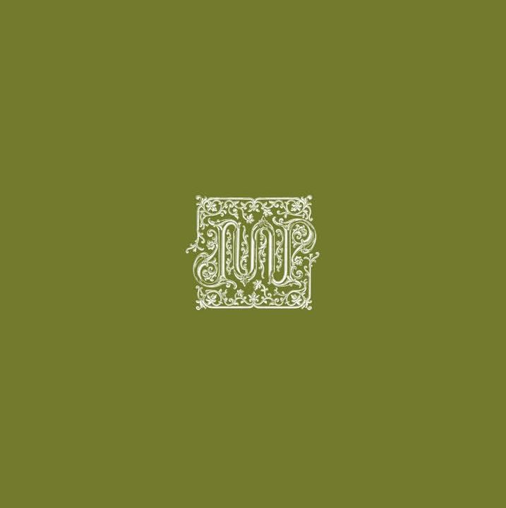

Quem é Jão?
Jão é um cantor, compositor e produtor musical brasileiro. Seu nome completo é João Vitor Romania Balbino. Ele começou publicando covers na internet e, com o tempo, conquistou milhões de fãs graças às suas letras sinceras, que falam sobre amor, saudade, crescimento e sentimentos que muitas pessoas vivem. Hoje, é considerado um dos maiores artistas do pop brasileiro.


Memórias Póstumas
Memórias Póstumas representa uma nova fase da carreira de Jão. O álbum reúne músicas que abordam temas como luto, memórias, amadurecimento, recomeços e a importância das pessoas que deixam marcas em nossa vida. Com uma identidade visual marcada pelo verde musgo, tons terrosos e elementos da natureza, o projeto transmite uma sensação de calma, nostalgia e reflexão.
Catedral
"Catedral" abre o álbum Memórias Póstumas e apresenta ao ouvinte o clima emocional de todo o projeto. A música convida à reflexão sobre lembranças, perdas, esperança e o significado das pessoas que permanecem vivas em nossa memória. É considerada uma das canções mais emocionantes da nova fase de Jão.

Galeria